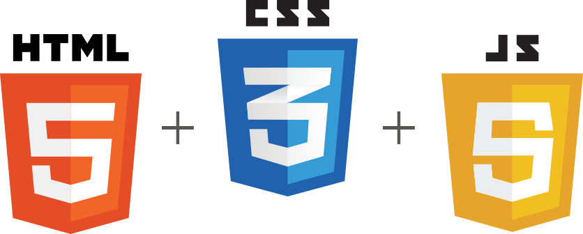

Introduction
O desenvolvedor FrontEnd é responsável por 'dar vida' à interface. Trabalha com a parte da aplicação que interage diretamente com o usuário. Por isso, é importante que esse desenvolvedor também se preocupe com a experiência do usuário. Na parte de estudo, este profissional foca em HTML (linguagem de marcação), CSS (linguagem de estilo) e JavaScript (linguagem de script/programação).